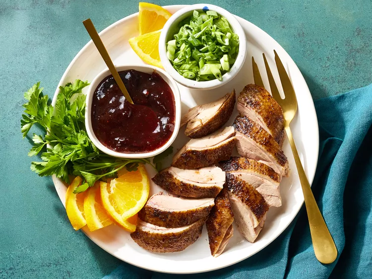

Peking Duck

Description
The flavor of this Peking duck is delicious thanks to an easy spice rub. The roast duck can be served with plum sauce or other fruit sauce. This recipe is a short-cut version, but it is fantastic!
Peking duck is a famous Chinese dish that dates back at least 400 years. The duck is characterized by its crispy skin and tender meat. It is traditionally made with a specific kind of duck and takes days to prepare, but this version comes together in just under four hours.
Ingredients
- 1 (4 pound) whole duck, dressed
- 1/2 teaspoon ground cinnamon
- 1/2 teaspoon ground ginger
- 1/4 teaspoon ground nutmeg
- 1/4 teaspoon ground white pepper
- 1/8 teaspoon ground cloves
- 3 tablespoons soy sauce, divided
- 1 tablespoon honey
- 5 green onions, divided
- 1/2 cup plum jam
- 1/4 cup finely chopped chutney
- 1 1/2 teaspoons sugar
- 1 1/2 teaspoons distilled white vinegar
- 1 orange, sliced in rounds
- 1 tablespoon chopped fresh parsley, for garnish